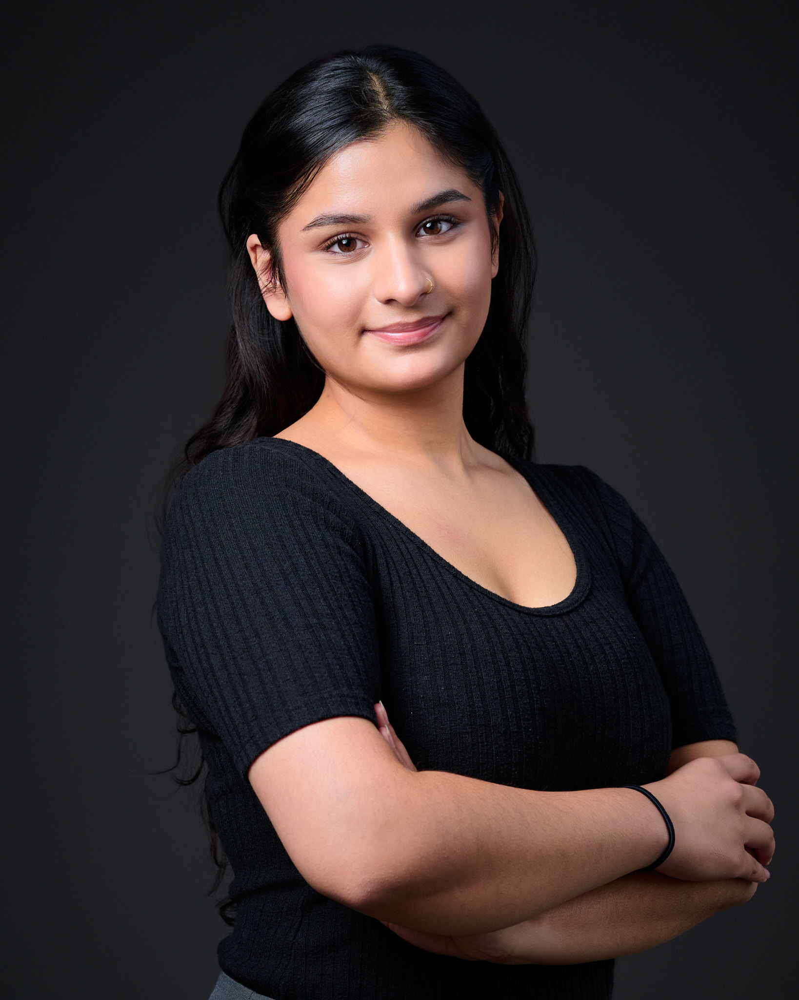

<!doctype html>
<html lang="en">
<head>
  <meta charset="UTF-8">
  <meta name="viewport" content="width=device-width, initial-scale=1.0">
  <title>Jaspreet Lal | Personal Site</title>
  <link rel="preconnect" href="https://fonts.googleapis.com">
  <link rel="preconnect" href="https://fonts.gstatic.com" crossorigin>
  <link href="https://fonts.googleapis.com/css2?family=Playfair+Display:wght@500;600;700&family=Inter:wght@400;500;600&display=swap" rel="stylesheet">
  <style>
    :root {
      --sand: #f8f5eb;
      --terra: #c07a6a;
      --terra-deep: #a25f52;
      --ink: #5c4238;
      --muted: #7a655a;
      --line: #d3b9aa;
      --hero-overlay: rgba(6, 12, 18, 0.55);
      --text-main: #f8f7f4;
      --text-sub: #e4e3df;
      --accent: #f2c48d;
    }
    * { box-sizing: border-box; }
    html {
      background: var(--sand);
    }
    body {
      margin: 0;
      font-family: 'Inter', system-ui, -apple-system, sans-serif;
      color: var(--text-main);
      background: var(--sand);
      min-height: 100vh;
    }
    #root {
      background: var(--sand);
      min-height: 100vh;
    }
    main,
    .section-shell,
    .cv-block,
    .about-block,
    .contact,
    footer {
      background: var(--sand);
    }
    a { color: inherit; text-decoration: none; }
    .hero {
      position: relative;
      height: 100vh;
      overflow: hidden;
      display: flex;
      align-items: center;
      justify-content: flex-end;
      padding: 0 8vw;
      isolation: isolate;
    }
    .hero video {
      position: absolute;
      inset: 0;
      width: 100%;
      height: 100%;
      object-fit: cover;
      z-index: -2;
    }
    .hero::after {
      content: "";
      position: absolute;
      inset: 0;
      background: linear-gradient(115deg, rgba(6, 12, 18, 0.7) 20%, rgba(6, 12, 18, 0.35) 55%, rgba(6, 12, 18, 0.15) 100%);
      z-index: -1;
    }
    .hero__content {
      max-width: 620px;
      text-align: right;
    }
    .hero__title {
      font-family: 'Playfair Display', 'Times New Roman', serif;
      font-size: clamp(2.8rem, 7vw, 5rem);
      letter-spacing: 0.08em;
      margin: 0 0 1.5rem;
      line-height: 1.08;
      text-transform: uppercase;
    }
    .hero__subtitle {
      font-size: clamp(1.05rem, 2.4vw, 1.35rem);
      font-weight: 500;
      color: var(--text-sub);
      line-height: 1.6;
      margin: 0 0 1.25rem;
    }
    .hero__cta {
      display: inline-flex;
      align-items: center;
      gap: 0.6rem;
      padding: 0.7rem 1.1rem;
      border-radius: 999px;
      border: 1px solid rgba(248, 247, 244, 0.35);
      background: rgba(8, 17, 23, 0.45);
      backdrop-filter: blur(6px);
      font-weight: 600;
      font-size: 0.95rem;
      letter-spacing: 0.02em;
      transition: transform 160ms ease, border-color 160ms ease, background 160ms ease;
    }
    .hero__cta svg {
      width: 18px;
      height: 18px;
      stroke: var(--accent);
      fill: none;
    }
    .hero__cta:hover {
      transform: translateY(-2px);
      border-color: rgba(242, 196, 141, 0.8);
      background: rgba(8, 17, 23, 0.7);
    }
    .hero__cta:active { transform: translateY(0); }
    main {
      padding: 6rem 4vw 0;
      background: var(--sand);
      color: var(--ink);
    }
    .section-shell {
      max-width: 1280px;
      margin: 0 auto;
      padding: 0 2.4rem;
      width: 100%;
      background: transparent;
    }
    .eyebrow {
      text-transform: uppercase;
      letter-spacing: 0.15em;
      font-weight: 600;
      font-size: 0.75rem;
      color: var(--terra);
      text-align: center;
      margin-bottom: 1.25rem;
    }
    .cv-block {
      padding: 0 0 4rem;
    }
    .cv-mark {
      font-family: 'Playfair Display', 'Times New Roman', serif;
      font-size: clamp(3rem, 6vw, 5rem);
      color: var(--terra);
      margin: 0 0 2.5rem;
      text-align: left;
    }
    .cv-panels {
      display: grid;
      grid-template-columns: repeat(auto-fit, minmax(280px, 1fr));
      gap: 2.5rem;
    }
    .cv-column {
      padding-right: 1.5rem;
    }
    .cv-heading {
      font-family: 'Playfair Display', 'Times New Roman', serif;
      font-size: clamp(2rem, 4vw, 2.6rem);
      color: var(--terra);
      margin: 0 0 0.5rem;
      letter-spacing: 0.05em;
      text-transform: uppercase;
    }
    .cv-divider {
      border: none;
      border-top: 2px solid var(--terra);
      margin: 0 0 1.5rem;
    }
    .cv-item {
      margin-bottom: 1.4rem;
    }
    .cv-role {
      font-weight: 700;
      color: var(--ink);
    }
    .cv-org {
      margin-top: 0.25rem;
      color: var(--muted);
      display: flex;
      align-items: center;
      gap: 0.35rem;
      font-size: 0.98rem;
    }
    .cv-org::before {
      content: '›';
      color: var(--terra);
      font-weight: 800;
    }
    .projects-block {
      background: var(--terra);
      color: #fffaf3;
      padding: 4rem 0 4rem;
      margin: 0;
    }
    .projects-heading {
      font-family: 'Playfair Display', 'Times New Roman', serif;
      font-size: clamp(2.5rem, 5vw, 3rem);
      margin: 0 0 2.5rem;
      letter-spacing: 0.05em;
    }
    .projects-list {
      display: grid;
      gap: 3rem;
      max-width: 980px;
    }
    .project-item h4 {
      margin: 0 0 0.35rem;
      font-weight: 800;
      letter-spacing: 0.02em;
    }
    .project-meta {
      margin: 0 0 0.9rem;
      color: #f5e2d8;
      font-weight: 600;
      line-height: 1.5;
    }
    .project-meta a {
      color: #fffaf3;
      text-decoration: underline;
      text-underline-offset: 3px;
    }
    .project-copy {
      margin: 0;
      line-height: 1.8;
      color: #f6e8df;
    }
    .contact {
      max-width: 1280px;
      margin: 4rem auto 2rem;
      padding: 2.2rem;
      border: 1px solid var(--line);
      border-radius: 14px;
      background: #fff;
      color: var(--ink);
    }
    .contact a { color: var(--terra); font-weight: 700; }
    footer {
      padding: 3rem 8vw 3.5rem;
      color: var(--muted);
      font-size: 0.95rem;
      background: var(--sand);
      border-top: none;
      text-align: center;
      margin-top: 0;
    }
    .about-block {
      background: var(--sand);
      color: var(--ink);
      max-width: 1280px;
      margin: 4rem auto;
      padding: 0 1.8rem 2rem;
    }
    .about-grid {
      display: grid;
      grid-template-columns: minmax(320px, 1.6fr) minmax(260px, 1fr);
      gap: 2.75rem;
      align-items: start;
    }
    .about-heading {
      font-family: 'Playfair Display', 'Times New Roman', serif;
      font-size: clamp(2.5rem, 5vw, 3.5rem);
      margin: 0 0 1.5rem;
      letter-spacing: 0.04em;
      color: var(--terra);
    }
    .about-copy {
      margin: 0 0 1.4rem;
      line-height: 1.8;
      font-size: 1.05rem;
      color: var(--muted);
    }
    .about-list {
      margin: 0;
      padding-left: 1.1rem;
      line-height: 1.7;
      color: var(--muted);
      font-weight: 400;
    }
    .about-photo {
      width: 100%;
      max-width: 340px;
      border-radius: 18px;
      object-fit: cover;
      justify-self: center;
      align-self: center;
      display: block;
      margin: 0 auto;
      box-shadow: 0 14px 32px rgba(0,0,0,0.22);
    }
    @media (max-width: 720px) {
      .hero { justify-content: center; padding: 0 6vw; }
      .hero__content { text-align: center; }
      .hero__title { letter-spacing: 0.04em; }
    }
  </style>
</head>
<body>
  <div id="root"></div>

  <script src="https://unpkg.com/react@18/umd/react.production.min.js" crossorigin></script>
  <script src="https://unpkg.com/react-dom@18/umd/react-dom.production.min.js" crossorigin></script>
  <script src="https://unpkg.com/@babel/standalone/babel.min.js"></script>

  <script type="text/babel">
    const cvWork = [
      { role: 'Data Science Intern (2024 – present)', org: 'Metropolitan Transportation Authority (MTA)' },
      { role: 'Administrative Dean (2021–2024)', org: 'Sadie Nash Leadership Project' },
      { role: 'Software Engineering Intern (Summer 2021)', org: 'Apartment Therapy' },
    ];

    const cvEducation = [
      { role: 'Dual MS in Applied Information Science & Systems', org: 'Cornell Tech, 2026' },
      { role: 'BS in Computer Science', org: 'Fordham University, 2024' },
    ];

    const projects = [
      {
        title: 'MTA Blog Post',
        meta: '“Roses, romance, and rush hour: A data-driven look at NYC on Valentine’s Day” | Spring 2025',
        href: 'https://www.mta.info/article/roses-romance-and-rush-hour-data-driven-look-nyc-valentines-day',
        summary: `While working on MTA's Open Data team, I co-authored an article exploring Valentine's Day travel patterns in New York City using MTA Open Data. I worked with datasets from the Socrata API, including MTA Bridges & Tunnels HourlyCrossings and MTA Subway Hourly Ridership, and used DuckDB for querying and Python (Pandas, Seaborn, Matplotlib) for data wrangling and visualization. Through time-series analysis and heatmap comparisons, I examined anomalies, shifts in commuter behavior, and borough-level differences. This project showcases both a technical workflow for handling large public datasets and an applied case study in urban mobility.`,
      },
      {
        title: 'SafeScan — ML App for Cosmetic & Personal Care Safety',
        meta: 'https://github.com/vmc54/PAML-Final-Project | Spring 2025',
        href: 'https://github.com/vmc54/PAML-Final-Project',
        summary: `I contributed to SafeScan, a project that uses OCR to extract ingredient lists from product images and applies custom-built models (including linear regression, decision trees, and random forests) to generate a 0–10 safety score based on the presence of potentially harmful chemicals like parabens, phthalates, and sulfates. We trained and evaluated the models on a Kaggle dataset of 1,472 products using MSE, MAE, and R², with the Random Forest performing best and explaining ~87% of the variance in harm scores. The final system was deployed as a Streamlit app that lets users upload images, view extracted ingredients, and receive a transparent safety breakdown, bridging machine learning and public health to support informed purchasing and safer product formulations.`,
      },
    ];

    const smoothScroll = (event, targetId) => {
      event.preventDefault();
      const target = document.querySelector(targetId);
      if (target) {
        target.scrollIntoView({ behavior: 'smooth' });
      }
    };

    const Hero = () => (
      <header className="hero" id="top">
        <video autoPlay muted loop playsInline poster="images/portfolio_logo.jpg">
          <source src="images/pigeon.mp4" type="video/mp4" />
          Your browser does not support the video tag.
        </video>
        <div className="hero__content">
          <h1 className="hero__title">Jaspreet<br />Lal</h1>
          <p className="hero__subtitle">
            Masters Candidate, Applied Information Science &amp; Systems at Cornell Tech
          </p>
          <p className="hero__subtitle">
            Data Engineering Associate, Metropolitan Transit Authority (MTA)
          </p>
          <a className="hero__cta" href="#work" onClick={(e) => smoothScroll(e, '#work')}>
            <svg viewBox="0 0 24 24" aria-hidden="true">
              <path d="M12 4v16M6 14l6 6 6-6" strokeWidth="2" strokeLinecap="round" strokeLinejoin="round" />
            </svg>
            See my work
          </a>
        </div>
      </header>
    );

    const WorkSection = () => (
      <main id="work">
        <section className="cv-block">
          <div className="section-shell">
            <div className="eyebrow">Projects | CV</div>
            <div className="cv-mark">CV</div>
            <div className="cv-panels">
              <div className="cv-column">
                <h3 className="cv-heading">Work</h3>
                <hr className="cv-divider" />
                {cvWork.map((item) => (
                  <div className="cv-item" key={item.role}>
                    <div className="cv-role">{item.role}</div>
                    <div className="cv-org">{item.org}</div>
                  </div>
                ))}
              </div>
              <div className="cv-column">
                <h3 className="cv-heading">Education</h3>
                <hr className="cv-divider" />
                {cvEducation.map((item) => (
                  <div className="cv-item" key={item.role}>
                    <div className="cv-role">{item.role}</div>
                    <div className="cv-org">{item.org}</div>
                  </div>
                ))}
              </div>
            </div>
          </div>
        </section>

        <section className="projects-block">
          <div className="section-shell">
            <div className="eyebrow" style={{ color: '#f5e2d8' }}>Projects | CV</div>
            <h2 className="projects-heading">Projects</h2>
            <div className="projects-list">
              {projects.map((project) => (
                <article className="project-item" key={project.title}>
                  <h4>{project.title}</h4>
                  <p className="project-meta">
                    {project.href ? (
                      <a href={project.href} target="_blank" rel="noreferrer">{project.meta || project.href}</a>
                    ) : project.meta}
                  </p>
                  <p className="project-copy">{project.summary}</p>
                </article>
              ))}
            </div>
          </div>
        </section>

        <section className="about-block" id="about">
          <div className="eyebrow" style={{ color: '#f5e2d8' }}>About</div>
          <div className="about-grid">
            <div>
              <h2 className="about-heading">About Me</h2>
              <p className="about-copy">
                With over eight years of experience in computer science and technology, I bring strong proficiency in Python, SQL, C++, and related tools. I have extensive hands-on experience building and orchestrating data pipelines using Apache Airflow, including designing DAGs, managing dependencies, handling incremental and backfill workflows, and integrating Spark-based and SQL-driven transformations. My background in software and data engineering has equipped me to build reliable, scalable pipelines and solve complex problems in production environments.

                Beyond my academic and professional work, I'm an avid reader with wide-ranging intellectual interests. I also enjoy traveling and baking as creative outlets that balance my technical pursuits.              </p>
            </div>
              <div>
                
              </div>
          </div>
        </section>

        <section className="contact">
          <h3 style={{ marginTop: 0 }}>Get in touch</h3>
            <p>Thank you for taking the time to learn more about me. I am always open to new opportunities and collaborations. Feel free to reach out via <a href="https://www.linkedin.com/in/jaspreet-lal-232a171b2/" target="_blank" rel="noreferrer">LinkedIn</a>.</p>
            <p>Phone: <a href="tel:+19293507094">(929) 350 - 7094</a></p>
            <p>Email: <a href="mailto:jaspreetlal037@gmail.com">jaspreetlal037@gmail.com</a></p>
        </section>
      </main>
    );

    const Footer = () => (
      <footer>
        © {new Date().getFullYear()} Jaspreet Lal · Built with care in NYC.
      </footer>
    );

    const App = () => (
      <>
        <Hero />
        <WorkSection />
        <Footer />
      </>
    );

    const root = ReactDOM.createRoot(document.getElementById('root'));
    root.render(<App />);
  </script>
</body>
</html>

